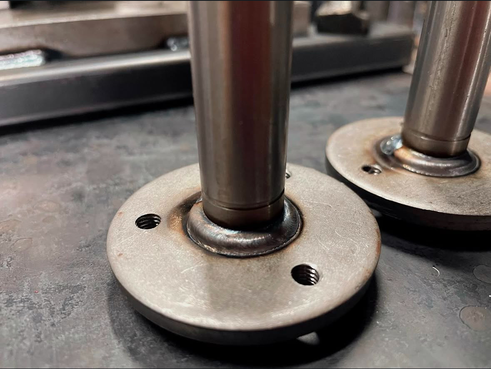
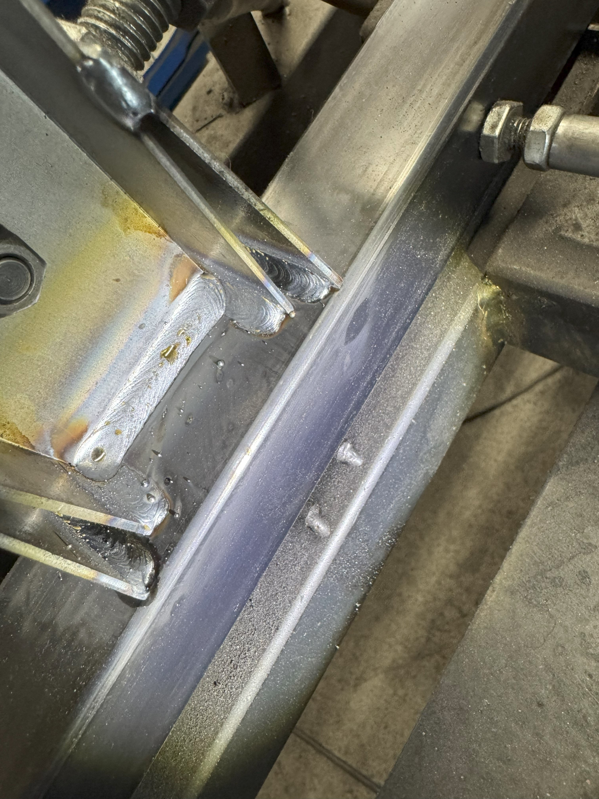

機械手臂焊接螺帽，我們的機械手臂可以透過程式設定，實現螺帽旁的焊道正圓，讓我們的工件有如藝術品般美觀。並且生產效率高，品質一致。
這部影片展示了如何利用機械手臂精準焊接，實現卓越品質與效率。

針對外面不常見的工件，只要客人把物件帶來，我們廠內就會有技術人員協助開發焊接模具，滿足客戶需求，嚴格的品管，讓我們的產品不會有過多的誤差。

針對特殊的填料需求我們的機械手臂都可以透過程式控制，例如這種焊道特殊的魚鱗焊我們一樣是有辦法達到。